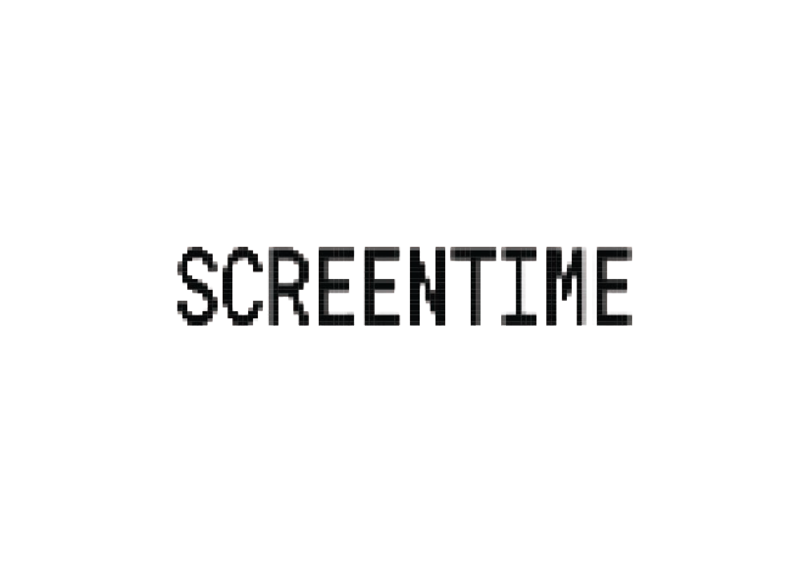

Oct 30Friday · 6:30 PM
Seeing the Unseen
Artist talk and short-film program
Maya ChenDesign Room · Cambridge

A gathering for images, ideas, and the people who make them.
Artist talk and short-film program
Conversation on documentary practice
On memory, archives, and moving pictures
Independent cinema, from script to screen